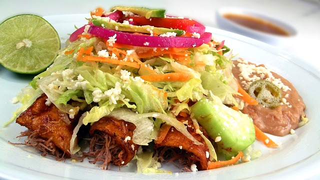

ENCHILADAS DE POLLO |
Ingredientes
- 2 pimientos (uno rojo y uno amarillo)
- Una cebolla
- 400 g de tomate frito
- 8 tortillas de maíz para enchilada *
- 400 g de pechuga de pollo
- Una cucharadita de especies mexicanas
- 2 dientes de ajo
- 80 g de queso rallado
- 110 ml de nata espesa
- Una cucharada sopera de aceite
|
 |
| Paso a paso |
- Reúne todos los ingredientes y precalienta el horno a 200 ºC.
- Pela la cebolla y córtala.
- Lava los pimientos y córtalos por la mitad quitándoles la parte blanca del interior. Después vuelve a cortarlos en tiras.
- Echa la cebolla y los pimientos en una sartén con un poco de aceite y sofríelos.
- Corta el pollo en trocitos.
- Saca las verduras de la sartén y sofríe el pollo en esa misma sartén.
- Cuando el pollo ya está dorado, añade las verduras, las especies mexicanas y el tomate frito. Deja cocer unos 5 minutos para que espese un poco.
- Utiliza una fuente de horno. Pon un poco de tomate frito y extiende una tortilla. Echa encima las verduras con el pollo.
- Dobla las puntas de la tortilla y enróllala
- Haz lo mismo con las otras tortillas y ponlas unas al lado de las otras. Después cúbrelas todas con la nata.
- Pon el queso rallado por encima y hornea durante unos 25 a 30 minutos hasta que quede bien dorado.
|
|
Inicio
|
TAMALES |
Ingredientes
- 1 kg. de harina de maíz cacahuazintle o MINSA.
- 1 cucharada sopera de polvo de hornear.
- 1 1/2 tazas de manteca.
- 1/2 taza de caldo de pollo.(o infusión de canela para tamales de dulce)
- 10 cáscaras de tomate.
- 2 cucharadas soperas de anís.
- Hojas de maíz lavadas.
- Sal. (o azúcar al gusto para tamales dulces).
|
|
| Paso a paso |
- Hierva en 2 tazas de agua, las cáscaras de tomate con el anís. Cuele y separe el agua.
- En un recipiente ponga la harina de maíz, añada sal y polvo de hornear.
- Semiderrita la manteca y viértala en la mezcla anterior. Comience a amasar añadiendo poco a poco tanto el caldo de pollo como el agua donde hirvieron las cáscaras de tomate, hasta obtener una textura uniforme y se logre que una bolita de masa flote en agua sin desbaratarse.
- Lave perfectamente con agua las hojas de maíz, después póngalas a remojar durante una hora aproximadamente y escúrralas bien.
- Tome hoja por hoja, por el lado cóncavo, y coloque una porción de masa en cada hoja de maíz y agregue mole verde, rojo, picadillo o rajas con queso, cubra con más masa, doble la hoja y envuelva.
- Conforme los haga, colóquelos verticalmente en un bote tamalero, vaporera u olla preparada. Cueza a vapor durante una hora hasta que se desprenda fácilmente de la hoja.
|
|
Inicio
|
QUESADILLAS |
Ingredientes
Para la masa
- Agua tibia (¾ de taza)
- 1 taza de harina de maíz (120 gr)
- ½ cucharadita de sal
Para el relleno:
- Queso (tradicionalmente de utiliza queso tipo Oaxaca pero, en sustitución, podemos usar algún otro queso que funda bien).
|
|
| Paso a paso |
- Mezcla poco a poco el agua con la harina y la sal. Amasa hasta obtener una masa homogénea.
- Divídela en 12 porciones y haz con ellas 12 bolitas.
- Pon un trozo de film transparente sobre una superficie plana. Pon en el centro la bola y sobre ella otro trozo de film transparente. Aplasta la bola hasta que tenga unos 15 cm de diámetro. Haz lo mismo con el resto de bolas.
- ellénalas con el queso y, si quieres, añade los ingredientes que más te gusten: jamón york, pimientos, pollo en tiras, cubitos de tomate... Luego métalas en el horno hasta que se doren las tortillas por fuera y el queso funda. Si lo prefieres, en lugar de horno, puedes rehogarlas en la sartén a fuego no muy fuerte para que no se dore en exceso y el queso derrita bien.
|